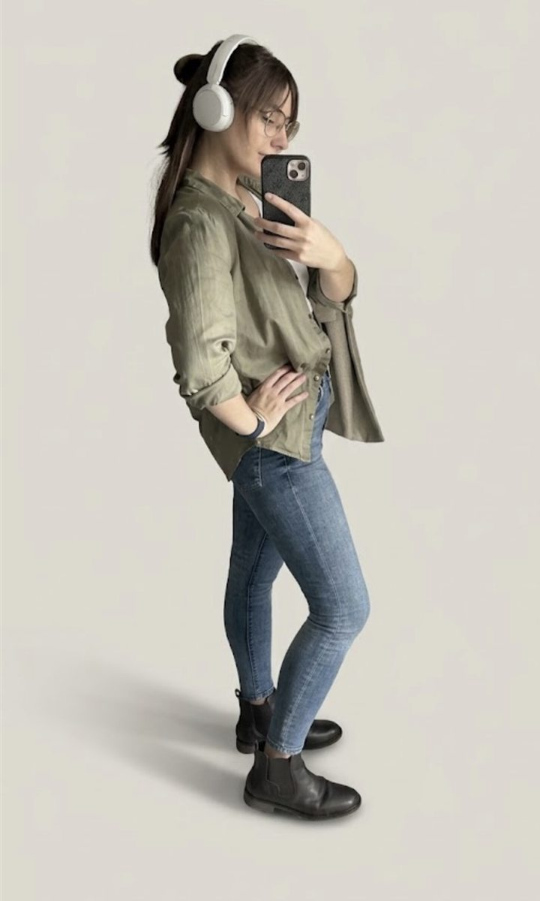

SURVIVOR ID
D. Škulavik
FILE #001 · NITRA
UX/UI DESIGNER & FRONT-END DEVELOPER
MSc. Dominika Škulavik
FIELD NOTES
Turns complicated workflows into simple interfaces.
Good at spotting interface problems.
Off-duty, can be found in a horror game, or between the pages of sci-fi.
Survivor stats
ACTIVE SKILLS
EXAMINE · UX & Research
- Wireframing & prototypingAdvanced
- Current-state mapping & user flowsAdvanced
- User roles & permissionsAdvanced
- Accessibility (WCAG 2.1)Skillful
- Requirements & stakeholder goalsSkillful
EXAMINE · UI & Design Systems
- FigmaAdvanced
- UI designAdvanced
- Design systems & tokensAdvanced
- Responsive designAdvanced
- Illustrator · PhotoshopSkillful
EXAMINE · Front-End
- HTML5Advanced
- CSS3Advanced
- JavaScript (ES6)Skillful
- Responsive layoutsAdvanced
- Accessible markup (ARIA)Skillful
EXAMINE · Back-End & Data
- ASP.NET Web FormsSkillful
- VB.NETSkillful
- SQL Server · T-SQLSkillful
- GitBasic
- WordPressSkillful
PASSIVE SKILLS
-
Attention to detail
-
Analytical thinking
-
Comfortable with ambiguity
-
Speaks design and code
Favourite companions
-
CLASS · ARCHITECT
Figma
Where every screen, flow and design token starts.
-
CLASS · ARTIST
Illustrator & Photoshop
Logos, icons and photos that need a steady hand.
-
CLASS · SUPPORT
Claude
Writes code alongside me. I review every line it hands back.
-
CLASS · ENGINEER
VS Code
Where the designs turn into HTML, CSS and JavaScript.
“AI is a good servant but a bad master.”